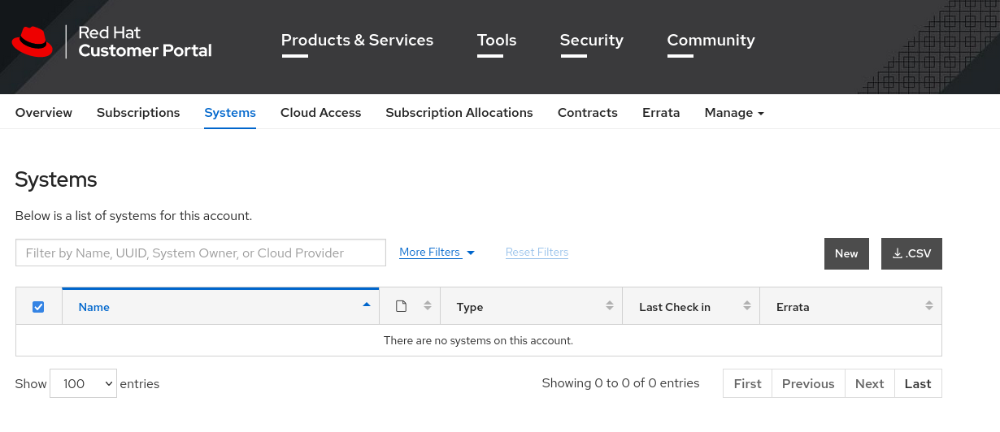

Appendix
Enabling a Cluster-wide entitlement
Introduction
Note
The Driver Toolkit, which enables entitlement-free deployments of the GPU Operator, is available for certain z-streams on OpenShift 4.8 and all z-streams on OpenShift 4.9. However, some Driver Toolkit images are broken, so we recommend maintaining entitlements for all OpenShift versions prior to 4.9.9. See broken driver toolkit for more information.
The NVIDIA GPU Operator deploys several pods used to manage and enable GPUs for use in the OpenShift Container Platform. Some of these Pods require packages that are not available by default in the Universal Base Image (UBI) that OpenShift Container Platform uses. To make packages available to the NVIDIA GPU driver container, you must enable cluster-wide entitled container builds in OpenShift.
At a high level, enabling a cluster-wide entitlement involves three steps:
Download Red Hat OpenShift Container Platform subscription certificates from the Red Hat Customer Portal (access requires login credentials).
Create a
MachineConfigthat enables the subscription manager and provides a valid subscription certificate. Wait for theMachineConfigOperatorto reboot the node and finish applying theMachineConfig.Validate that cluster-wide entitlement is working properly.
These instructions assume you downloaded an entitlement encoded in base64 from the Red Hat Customer Portal or extracted it from an existing node.
Creating entitled containers requires that you assign machine configuration that has a valid Red Hat entitlement certificate to your worker nodes. This step is necessary because Red Hat Enterprise Linux (RHEL) CoreOS nodes are not yet automatically entitled.
Obtaining an entitlement certificate
Follow the guidance below to edit obtain the entitlement certificate.
Navigate to the Red Hat Customer Portal systems management page and click New.
Select Hypervisor and populate the Name field with the text OpenShift-Entitlement.

Click CREATE.
Select the Subscriptions tab and click Attach Subscriptions.

Search for Red Hat Developer Subscription [content here may vary according to accounts], select one of them and click Attach Subscriptions.
Note
The Red Hat Developer Subscription is choosen here purely for illustrating this example. Choose an appropriate subscription relevant for your your needs.
Click Download Certificates.

Download and extract the file.
Extract the key <key>.pem and test it with this command:
$ curl -E <key>.pem -Sfs -k https://cdn.redhat.com/content/dist/rhel8/8/x86_64/baseos/os/repodata/repomd.xml | head -3
Note
With a valid key, curl downloads the repository entrypoint and shows its head shown in the example below.
With an invalid key, curl download is refused by the Red Hat package mirror.
<?xml version="1.0" encoding="UTF-8"?> <repomd xmlns="http://linux.duke.edu/metadata/repo" xmlns:rpm="http://linux.duke.edu/metadata/rpm"> <revision>1631130504</revision>
Add a cluster-wide entitlement
Use the following procedure to add a cluster-wide entitlement:
Create a local appropriately named directory. Change to this directory.
Download the
machine config YAML templatefor cluster-wide entitlements on OpenShift Container Platform. Save the downloaded file0003-cluster-wide-machineconfigs.yaml.templateto the directory created in step 1.Copy the selected
pemfile from your entitlement certificate to a local file namednvidia.pem:$ cp <path/to/pem/file>/<certificate-file-name>.pem nvidia.pemGenerate the MachineConfig file by appending the entitlement certificate:
$ sed -i -f - 0003-cluster-wide-machineconfigs.yaml.template << EOF s/BASE64_ENCODED_PEM_FILE/$(base64 -w0 nvidia.pem)/g EOF
Apply the machine config to the OpenShift cluster:
$ oc apply -f 0003-cluster-wide-machineconfigs.yaml.template
Note
This step triggers an update driven by the OpenShift Machine Config Operator and initiates a restart on all worker nodes one by one.
machineconfig.machineconfiguration.openshift.io/50-rhsm-conf created machineconfig.machineconfiguration.openshift.io/50-entitlement-pem created machineconfig.machineconfiguration.openshift.io/50-entitlement-key-pem created
Check the
machineconfig:$ oc get machineconfig | grep entitlement
50-entitlement-key-pem 2.2.0 45s 50-entitlement-pem 2.2.0 45s
Monitor the
MachineConfigPoolobject:$ oc get mcp/workerNAME CONFIG UPDATED UPDATING DEGRADED MACHINECOUNT READYMACHINECOUNT UPDATEDMACHINECOUNT DEGRADEDMACHINECOUNT AGE worker rendered-worker-5f1eaf24c760fb389d47d3c37ef41c29 True False False 2 2 2 0 7h15m
Here you can see that the MCP is updated, not updating or degraded, so all the
MachineConfigresources have been successfully applied to the nodes and you can proceed to validate the cluster.
Validate the cluster-wide entitlement
Validate the cluster-wide entitlement with a test pod that queries a Red Hat subscription repo for the kernel-devel package.
Create a test pod:
$ cat << EOF >> mypod.yaml apiVersion: v1 kind: Pod metadata: name: cluster-entitled-build-pod namespace: default spec: containers: - name: cluster-entitled-build image: registry.access.redhat.com/ubi8:latest command: [ "/bin/sh", "-c", "dnf search kernel-devel --showduplicates" ] restartPolicy: Never EOF
Apply the test pod:
$ oc create -f mypod.yamlpod/cluster-entitled-build-pod createdVerify the test pod is created:
$ oc get pods -n defaultNAME READY STATUS RESTARTS AGE cluster-entitled-build-pod 1/1 Completed 0 64m
Validate that the pod can locate the necessary kernel-devel packages:
$ oc logs cluster-entitled-build-pod -n defaultUpdating Subscription Management repositories. Unable to read consumer identity Subscription Manager is operating in container mode. Red Hat Enterprise Linux 8 for x86_64 - AppStre 15 MB/s | 14 MB 00:00 Red Hat Enterprise Linux 8 for x86_64 - BaseOS 15 MB/s | 13 MB 00:00 Red Hat Universal Base Image 8 (RPMs) - BaseOS 493 kB/s | 760 kB 00:01 Red Hat Universal Base Image 8 (RPMs) - AppStre 2.0 MB/s | 3.1 MB 00:01 Red Hat Universal Base Image 8 (RPMs) - CodeRea 12 kB/s | 9.1 kB 00:00 ====================== Name Exactly Matched: kernel-devel ====================== kernel-devel-4.18.0-80.1.2.el8_0.x86_64 : Development package for building : kernel modules to match the kernel kernel-devel-4.18.0-80.el8.x86_64 : Development package for building kernel : modules to match the kernel kernel-devel-4.18.0-80.4.2.el8_0.x86_64 : Development package for building : kernel modules to match the kernel kernel-devel-4.18.0-80.7.1.el8_0.x86_64 : Development package for building : kernel modules to match the kernel kernel-devel-4.18.0-80.11.1.el8_0.x86_64 : Development package for building : kernel modules to match the kernel kernel-devel-4.18.0-147.el8.x86_64 : Development package for building kernel : modules to match the kernel kernel-devel-4.18.0-80.11.2.el8_0.x86_64 : Development package for building : kernel modules to match the kernel kernel-devel-4.18.0-80.7.2.el8_0.x86_64 : Development package for building : kernel modules to match the kernel kernel-devel-4.18.0-147.0.3.el8_1.x86_64 : Development package for building : kernel modules to match the kernel kernel-devel-4.18.0-147.0.2.el8_1.x86_64 : Development package for building : kernel modules to match the kernel kernel-devel-4.18.0-147.3.1.el8_1.x86_64 : Development package for building : kernel modules to match the kernel
Any Pod based on RHEL can now run entitled builds.